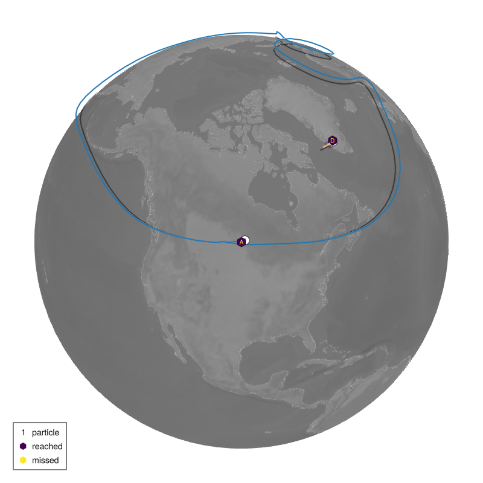
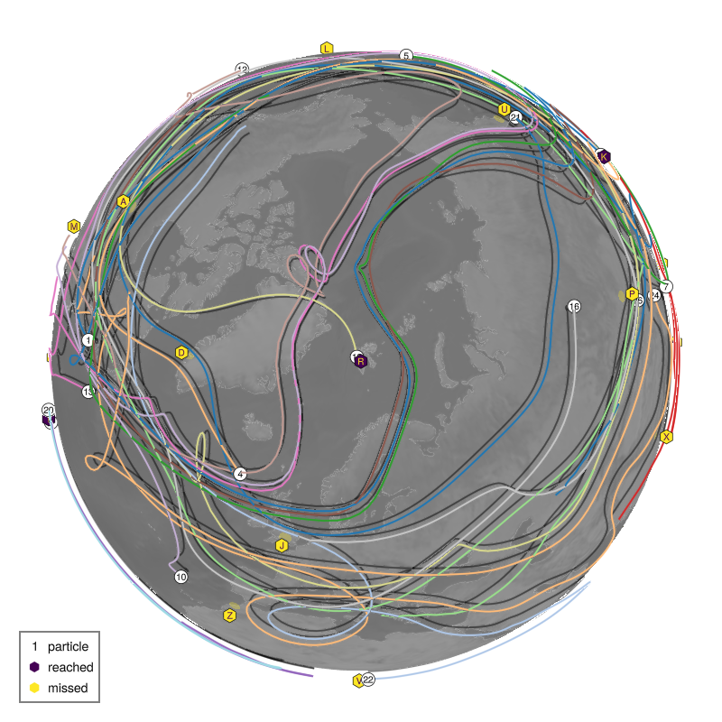
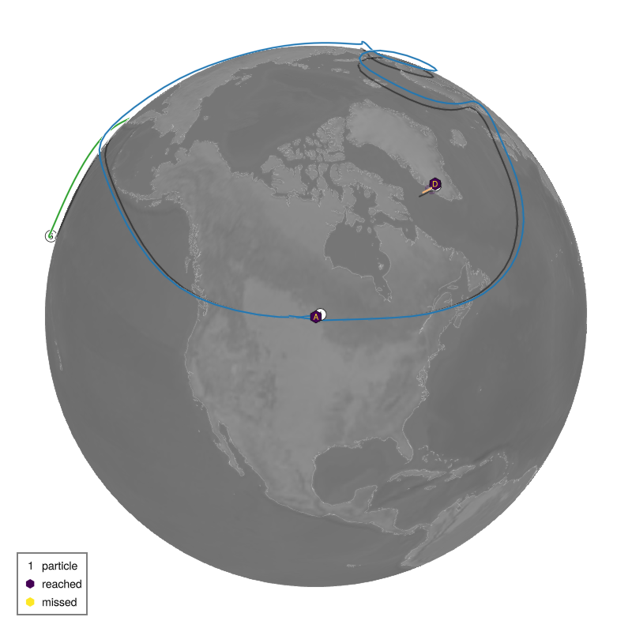
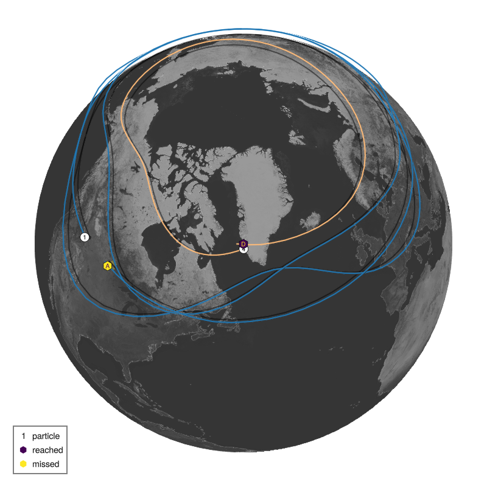
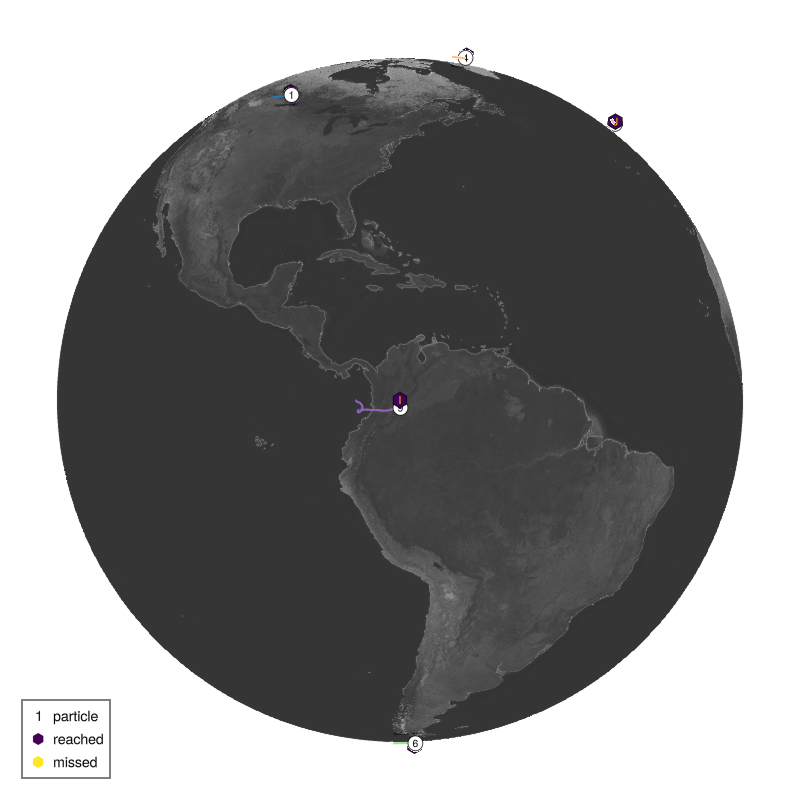
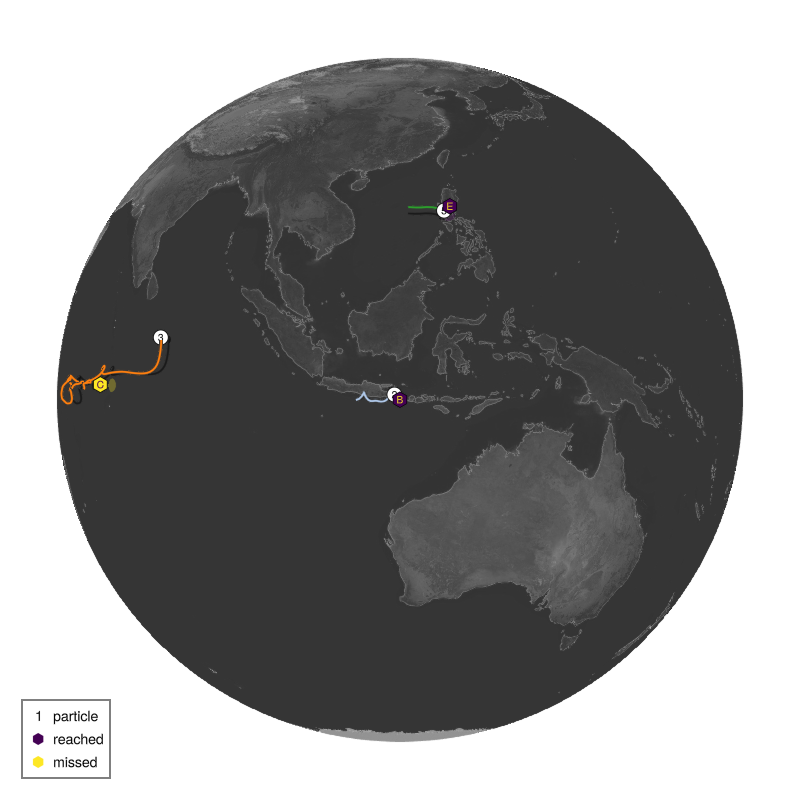
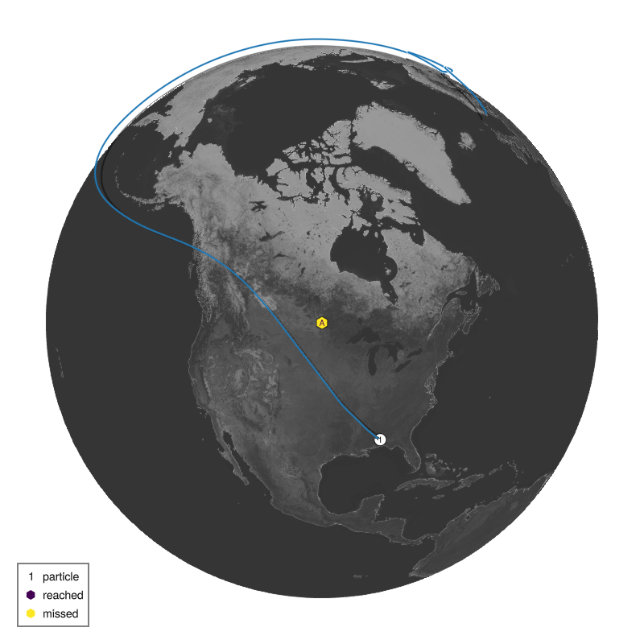
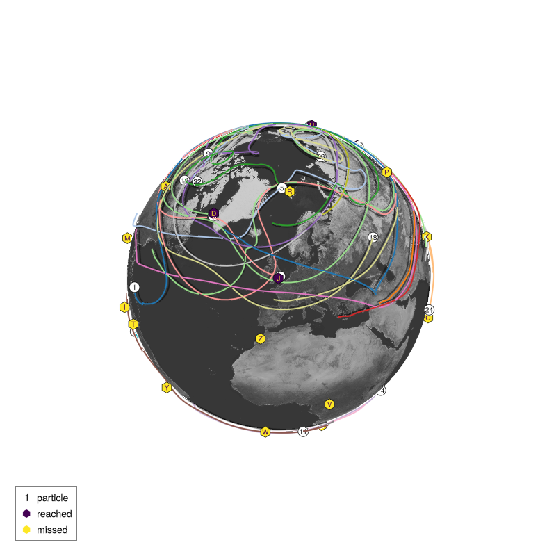
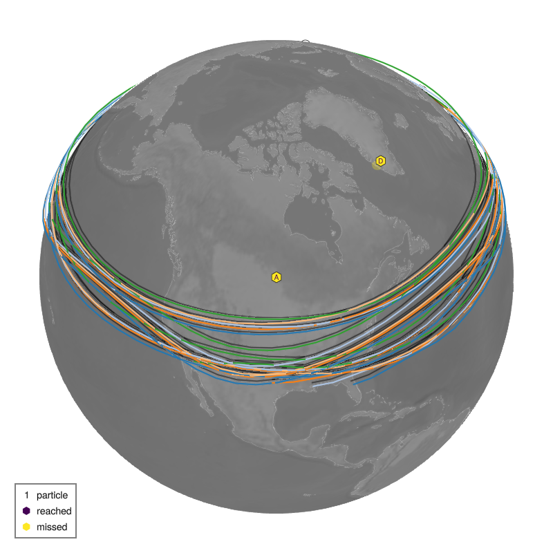
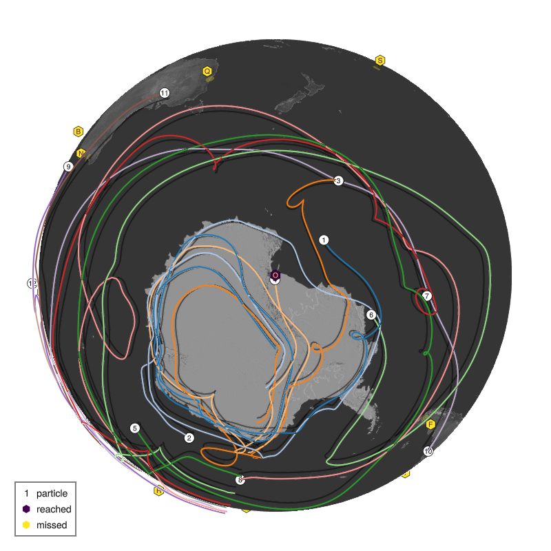

List of submissions
It follows the code and plot of the trajectories of all TravellingSailorProblem submissions to /submissions sorted in alphabetical order of the filename.
Oracle of Winds: Seeds know all
path: /submissions/global_optimizer2.jl
rank: 1. of 11 submissions
name = "Oracle of Winds"
description = "Seeds know all"
nchildren = 5
layer = 6 # [1, 8], 1 is top layer, 8 is surface layer
# Optimized departure locations found through extensive global optimization
# with high maxiters (brute force search over 1000+ configurations)
# Pre-computed destination locations from shuffle seed to guide optimization
departures = [
(-103.1, 49.9), # Ana - Winnipeg (6 degrees west)
( 109.0, -8.7), # Babu - Bali (6 degrees west)
( 67.5, -4.6), # Carla - Seychelles (6 degrees west)
( -57.7, 64.2), # Diego - Nuuk (6 degrees west)
( 116.0, 14.6), # Elif - Manila (5 degrees west)
]
Evaluation:
Destination 1 Ana ( -97.1˚E, 49.9˚N) reached by particle 1: 54827 points
Destination 2 Babu ( 115.0˚E, -8.7˚N) reached by particle 2: 2218 points
Destination 3 Carla ( 73.5˚E, -4.6˚N) reached by particle 3: 6504 points
Destination 4 Diego ( -51.7˚E, 64.2˚N) reached by particle 4: 514 points
Destination 5 Elif ( 121.0˚E, 14.6˚N) reached by particle 5: 788 points
Evaluation: 5/5 reached, 64851 points
Pointcloud: Who needs a grid if you have unlimited particles?
path: /submissions/pointcloud.jl
rank: 2. of 11 submissions
name = "Pointcloud"
description = "Who needs a grid if you have unlimited particles?"
nchildren = 26 # number of children and particles
layer = 8 # vertical layer
departures = [
(227.97813415527344, 57.001502990722656),
(161.78314208984375, -13.74948787689209),
(118.96931457519531, 4.869055271148682),
(286.2475280761719, 56.65156555175781),
(219.96484375, 55.997013092041016),
(310.028076171875, -36.46583938598633),
(67.53450012207031, 30.379545211791992),
(248.95631408691406, -52.838443756103516),
(342.21185302734375, 4.801722526550293),
(267.5565490722656, 18.264474868774414),
(227.58285522460938, 47.0013427734375),
(265.8605651855469, 20.586313247680664),
(276.6998596191406, 31.400850296020508),
(245.11285400390625, -40.04520034790039),
(347.238525390625, -54.1341438293457),
(1.841261386871338, 53.7309455871582),
(39.174564361572266, -44.9803466796875),
(324.3095703125, 54.47859573364258),
(229.35960388183594, -51.83768081665039),
(331.65533447265625, 10.479414939880371),
(59.39408493041992, 48.35350036621094),
(230.30279541015625, 60.57208251953125),
(253.57798767089844, -41.4913444519043),
(275.3923645019531, 46.681304931640625),
(284.7900695800781, -6.203790664672852),
(19.285661697387695, 40.25618362426758),
]
NF = Float64
Evaluation:
Destination 1 Ana ( -97.1˚E, 49.9˚N) missed by particle 1: -1065 points
Destination 2 Babu ( 115.0˚E, -8.7˚N) missed by particle 2: -4031 points
Destination 3 Carla ( 73.5˚E, -4.6˚N) missed by particle 3: -1853 points
Destination 4 Diego ( -51.7˚E, 64.2˚N) missed by particle 21: -1066 points
Destination 5 Elif ( 121.0˚E, 14.6˚N) missed by particle 7: -3358 points
Destination 6 Felipe ( -70.7˚E, -53.2˚N) missed by particle 8: -4572 points
Destination 7 Gael ( 106.8˚E, 10.8˚N) missed by particle 7: -1330 points
Destination 8 Haruko ( 18.5˚E, -33.9˚N) reached by particle 8: 32626 points
Destination 9 Isla ( -74.1˚E, 4.7˚N) missed by particle 25: -9574 points
Destination 10 Jose ( -1.3˚E, 51.8˚N) missed by particle 22: -2470 points
Destination 11 Karim ( 139.7˚E, 35.7˚N) reached by particle 11: 47336 points
Destination 12 Lola (-157.8˚E, 21.3˚N) missed by particle 12: -17597 points
Destination 13 Maeve ( -96.7˚E, 17.1˚N) missed by particle 10: -4692 points
Destination 14 Noah ( 115.9˚E, -31.9˚N) missed by particle 17: -2238 points
Destination 15 Omar ( 166.7˚E, -77.8˚N) missed by particle 15: -20611 points
Destination 16 Priya ( 106.9˚E, 47.9˚N) missed by particle 26: -1565 points
Destination 17 Quirin ( 151.2˚E, -33.9˚N) reached by particle 17: 30099 points
Destination 18 Rasmus ( 15.6˚E, 78.2˚N) reached by particle 18: 58930 points
Destination 19 Saanvi (-169.9˚E, -21.2˚N) missed by particle 19: -20466 points
Destination 20 Tomas ( -61.5˚E, 10.5˚N) reached by particle 9: 20988 points
Destination 21 Uma ( 158.7˚E, 53.0˚N) missed by particle 26: -1410 points
Destination 22 Vera ( 15.3˚E, 4.4˚N) missed by particle 22: -2042 points
Destination 23 Walter ( -5.9˚E, -15.9˚N) missed by particle 8: -20039 points
Destination 24 Xia ( 85.3˚E, 27.7˚N) missed by particle 7: -1285 points
Destination 25 Yuki ( -47.9˚E, -15.8˚N) missed by particle 25: -1288 points
Destination 26 Zara ( -7.6˚E, 33.6˚N) missed by particle 24: -3207 points
Evaluation: 5/26 reached, 64220 points
Wind Rider: Optimized westerly trajectories
path: /submissions/wind_rider.jl
rank: 3. of 11 submissions
name = "Wind Rider"
description = "Optimized westerly trajectories"
nchildren = 5 # [1, 26]
layer = 6 # [1, 8], 1 is top layer, 8 is surface layer
# Optimized departure locations (lon, lat) in degrees
# Strategy: Use westerlies at layer 6 with carefully tuned offsets
# Ana benefits from a long circumnavigation trajectory at offset 6
# Elif needs a larger offset of 50 degrees west to reach Manila
departures = [
(-103.1, 49.9), # Ana (Winnipeg) - 6 deg west offset
( 109.0, -8.7), # Babu (Bali) - 6 deg west offset
( 67.5, -4.6), # Carla (Seychelles) - 6 deg west offset
( -57.7, 64.2), # Diego (Nuuk) - 6 deg west offset
( 71.0, 14.6), # Elif (Manila) - 50 deg west offset
]
Evaluation:
Destination 1 Ana ( -97.1˚E, 49.9˚N) reached by particle 1: 54827 points
Destination 2 Babu ( 115.0˚E, -8.7˚N) reached by particle 2: 2218 points
Destination 3 Carla ( 73.5˚E, -4.6˚N) reached by particle 3: 6504 points
Destination 4 Diego ( -51.7˚E, 64.2˚N) reached by particle 4: 514 points
Destination 5 Elif ( 121.0˚E, 14.6˚N) missed by particle 5: -1258 points
Evaluation: 4/5 reached, 62805 points
Jet Stream Rider: Riding the upper tropospheric jet
path: /submissions/jetstream_rider.jl
rank: 4. of 11 submissions
name = "Jet Stream Rider"
description = "Riding the upper tropospheric jet"
nchildren = 5 # [1, 26]
layer = 4 # [1, 8], 1 is top layer, 8 is surface layer
# Optimized departure locations using grid search
# Layer 4 provides access to strong upper tropospheric winds (jet stream)
# Individual offsets were optimized: Ana=2, Babu=3, Carla=3, Diego=3, Elif=3
departures = [
(-99.1, 49.9), # Ana (Winnipeg) - 2 degrees west
(112.0, -8.7), # Babu (Bali) - 3 degrees west
(70.5, -4.6), # Carla (Seychelles) - 3 degrees west
(-54.7, 64.2), # Diego (Greenland) - 3 degrees west
(118.0, 14.6), # Elif (Manila) - 3 degrees west
]
Evaluation:
Destination 1 Ana ( -97.1˚E, 49.9˚N) missed by particle 1: -1433 points
Destination 2 Babu ( 115.0˚E, -8.7˚N) reached by particle 2: 375 points
Destination 3 Carla ( 73.5˚E, -4.6˚N) reached by particle 3: 396 points
Destination 4 Diego ( -51.7˚E, 64.2˚N) reached by particle 4: 25857 points
Destination 5 Elif ( 121.0˚E, 14.6˚N) reached by particle 5: 417 points
Evaluation: 4/5 reached, 25612 points
ChrisRackauckas: Global optimization westerlies
path: /submissions/global_optimizer.jl
rank: 5. of 11 submissions
name = "ChrisRackauckas"
description = "Global optimization westerlies"
nchildren = 10 # [1, 26]
layer = 5 # [1, 8], 1 is top layer, 8 is surface layer
# Departures optimized using global search over wind patterns
# Strategy: Start particles 5 degrees west of destinations (westerlies flow west to east)
# Exception: Haruko at 3 degrees west (Cape Town mid-latitude southern hemisphere)
# Layer 5 provides good balance between reaching destinations and distance flown
departures = [
(-102.1, 49.9), # Ana (Winnipeg) - 5 deg west
(110.0, -8.7), # Babu (Bali) - 5 deg west
(68.5, -4.6), # Carla (Seychelles) - 5 deg west
(-56.7, 64.2), # Diego (Nuuk) - 5 deg west
(116.0, 14.6), # Elif (Manila) - 5 deg west
(-75.7, -53.2), # Felipe (Punta Arenas) - 5 deg west
(101.8, 10.8), # Gael (Ho Chi Minh) - 5 deg west
(15.5, -33.9), # Haruko (Cape Town) - 3 deg west (optimized)
(-79.1, 4.7), # Isla (Bogota) - 5 deg west
(-6.3, 51.8), # Jose (Oxford) - 5 deg west
]
Evaluation:
Destination 1 Ana ( -97.1˚E, 49.9˚N) reached by particle 1: 582 points
Destination 2 Babu ( 115.0˚E, -8.7˚N) reached by particle 2: 970 points
Destination 3 Carla ( 73.5˚E, -4.6˚N) missed by particle 3: -1160 points
Destination 4 Diego ( -51.7˚E, 64.2˚N) reached by particle 4: 353 points
Destination 5 Elif ( 121.0˚E, 14.6˚N) reached by particle 5: 742 points
Destination 6 Felipe ( -70.7˚E, -53.2˚N) reached by particle 6: 542 points
Destination 7 Gael ( 106.8˚E, 10.8˚N) missed by particle 7: -1038 points
Destination 8 Haruko ( 18.5˚E, -33.9˚N) reached by particle 8: 523 points
Destination 9 Isla ( -74.1˚E, 4.7˚N) reached by particle 9: 1228 points
Destination 10 Jose ( -1.3˚E, 51.8˚N) reached by particle 10: 557 points
Evaluation: 8/10 reached, 3299 points
Peter Pan: Westerlies
path: /submissions/westerlies.jl
rank: 6. of 11 submissions
name = "Peter Pan"
description = "Westerlies"
nchildren = 5 # [1, 26]
layer = 5 # [1, 8], 1 is top layer, 8 is surface layer
# optional parameter: number format
NF = Float64
# Locations (lon, lat) in degrees ˚E, ˚N of the first 10 children
departures = [
( -97.1, 49.9),
( 115.0, -8.7),
( 73.5, -4.6),
( -51.7, 64.2),
( 121.0, 14.6),
]
# move all 5 degrees west
for i in eachindex(departures)
lon, lat = departures[i]
departures[i] = (lon - 5, lat)
end
Evaluation:
Destination 1 Ana ( -97.1˚E, 49.9˚N) reached by particle 1: 582 points
Destination 2 Babu ( 115.0˚E, -8.7˚N) reached by particle 2: 970 points
Destination 3 Carla ( 73.5˚E, -4.6˚N) missed by particle 3: -1160 points
Destination 4 Diego ( -51.7˚E, 64.2˚N) reached by particle 4: 353 points
Destination 5 Elif ( 121.0˚E, 14.6˚N) reached by particle 5: 742 points
Evaluation: 4/5 reached, 1487 points
Blackbeard: Way too close!
path: /submissions/superclose.jl
rank: 7. of 11 submissions
name = "Blackbeard"
description = "Way too close!"
nchildren = 10 # [1, 26]
layer = 1 # [1, 8], 1 is top layer, 8 is surface layer
# Locations (lon, lat) in degrees ˚E, ˚N of the first 10 children
departures = [
( -97.1, 49.9),
( 115.0, -8.7),
( 73.5, -4.6),
( -51.7, 64.2),
( 121.0, 14.6),
( -70.7, -53.2),
( 106.8, 10.8),
( 18.5, -33.9),
( -74.1, 4.7),
( -1.3, 51.8),
]Evaluation:
Destination 1 Ana ( -97.1˚E, 49.9˚N) reached by particle 1: 0 points
Destination 2 Babu ( 115.0˚E, -8.7˚N) reached by particle 2: 0 points
Destination 3 Carla ( 73.5˚E, -4.6˚N) reached by particle 3: 0 points
Destination 4 Diego ( -51.7˚E, 64.2˚N) reached by particle 4: 0 points
Destination 5 Elif ( 121.0˚E, 14.6˚N) reached by particle 5: 0 points
Destination 6 Felipe ( -70.7˚E, -53.2˚N) reached by particle 6: 0 points
Destination 7 Gael ( 106.8˚E, 10.8˚N) reached by particle 7: 0 points
Destination 8 Haruko ( 18.5˚E, -33.9˚N) reached by particle 8: 0 points
Destination 9 Isla ( -74.1˚E, 4.7˚N) reached by particle 9: 0 points
Destination 10 Jose ( -1.3˚E, 51.8˚N) reached by particle 10: 0 points
Evaluation: 10/10 reached, 0 points
Spongebob Squarepants: 1 child
path: /submissions/spongebob_single.jl
rank: 8. of 11 submissions
name = "Spongebob Squarepants"
description = "1 child"
nchildren = 1 # [1, 26]
layer = 8 # [1, 8], 1 is top layer, 8 is surface layer
# single locations (lon, lat) in degrees ˚E, ˚N
departures = [(0, 61.1)]
Evaluation:
Destination 1 Ana ( -97.1˚E, 49.9˚N) missed by particle 1: -5291 points
Evaluation: 0/1 reached, -5291 points
Jack Sparrow: All 26 random
path: /submissions/all_random.jl
rank: 9. of 11 submissions
name = "Jack Sparrow"
description = "All 26 random"
nchildren = 26 # [1, 26]
layer = 7 # [1, 8], 1 is top layer, 8 is surface layer
# 26 random locations (lon, lat) in degrees ˚E, ˚N
departures = [
(322.34, 62.20),
(100.16, -51.68),
( 44.30, -27.89),
(105.32, -19.22),
(354.02, 68.25),
( 79.60, 28.18),
( 21.45, 37.36),
(270.17, 47.94),
( 99.39, 20.99),
(186.29, -55.38),
(270.93, -2.89),
(346.22, -65.58),
(272.65, 32.82),
(174.54, -51.99),
(358.22, -32.65),
( 73.29, 27.31),
( 35.74, 67.60),
(356.70, 45.61),
(238.86, -10.03),
( 94.67, -19.18),
( 94.02, -46.96),
(256.61, 24.72),
( 39.68, 34.94),
( 87.61, 9.33),
( 77.99, -26.93),
(292.05, 40.39),
]Evaluation:
Destination 1 Ana ( -97.1˚E, 49.9˚N) missed by particle 6: -2105 points
Destination 2 Babu ( 115.0˚E, -8.7˚N) missed by particle 20: -2637 points
Destination 3 Carla ( 73.5˚E, -4.6˚N) missed by particle 24: -16048 points
Destination 4 Diego ( -51.7˚E, 64.2˚N) reached by particle 23: 54527 points
Destination 5 Elif ( 121.0˚E, 14.6˚N) missed by particle 24: -2959 points
Destination 6 Felipe ( -70.7˚E, -53.2˚N) missed by particle 12: -3501 points
Destination 7 Gael ( 106.8˚E, 10.8˚N) missed by particle 24: -3266 points
Destination 8 Haruko ( 18.5˚E, -33.9˚N) missed by particle 14: -1414 points
Destination 9 Isla ( -74.1˚E, 4.7˚N) missed by particle 11: -8913 points
Destination 10 Jose ( -1.3˚E, 51.8˚N) reached by particle 26: 61434 points
Destination 11 Karim ( 139.7˚E, 35.7˚N) missed by particle 23: -1096 points
Destination 12 Lola (-157.8˚E, 21.3˚N) missed by particle 23: -7867 points
Destination 13 Maeve ( -96.7˚E, 17.1˚N) missed by particle 18: -2617 points
Destination 14 Noah ( 115.9˚E, -31.9˚N) missed by particle 25: -2345 points
Destination 15 Omar ( 166.7˚E, -77.8˚N) missed by particle 21: -3268 points
Destination 16 Priya ( 106.9˚E, 47.9˚N) missed by particle 1: -2135 points
Destination 17 Quirin ( 151.2˚E, -33.9˚N) missed by particle 25: -1203 points
Destination 18 Rasmus ( 15.6˚E, 78.2˚N) missed by particle 22: -3291 points
Destination 19 Saanvi (-169.9˚E, -21.2˚N) missed by particle 25: -7766 points
Destination 20 Tomas ( -61.5˚E, 10.5˚N) missed by particle 1: -14091 points
Destination 21 Uma ( 158.7˚E, 53.0˚N) reached by particle 17: 11469 points
Destination 22 Vera ( 15.3˚E, 4.4˚N) missed by particle 11: -28969 points
Destination 23 Walter ( -5.9˚E, -15.9˚N) missed by particle 11: -3209 points
Destination 24 Xia ( 85.3˚E, 27.7˚N) missed by particle 6: -2173 points
Destination 25 Yuki ( -47.9˚E, -15.8˚N) missed by particle 11: -5856 points
Destination 26 Zara ( -7.6˚E, 33.6˚N) missed by particle 18: -13848 points
Evaluation: 3/26 reached, -13147 points
Flying Dutchman: Big Foot on the Interstate 10
path: /submissions/flying_dutchman.jl
rank: 10. of 11 submissions
name = "Flying Dutchman"
description = "Big Foot on the Interstate 10"
nchildren = 5
layer = 1
# optional parameter:
# number of model time steps between particle advection/tracking steps
# fewer (shorter) steps yields smoother trajectories (default 6)
nsteps = 18
departures = [
( -82, 30), # (lon, lat) in degrees for particle 1
( -90, 31), # particle 2
( -98, 32), # etc
(-106, 33),
(-114, 34),
]
Evaluation:
Destination 1 Ana ( -97.1˚E, 49.9˚N) missed by particle 5: -7688 points
Destination 2 Babu ( 115.0˚E, -8.7˚N) missed by particle 1: -44246 points
Destination 3 Carla ( 73.5˚E, -4.6˚N) missed by particle 1: -39870 points
Destination 4 Diego ( -51.7˚E, 64.2˚N) missed by particle 5: -21409 points
Destination 5 Elif ( 121.0˚E, 14.6˚N) missed by particle 1: -18351 points
Evaluation: 0/5 reached, -131564 points
Sir Francis Drake: Prime Meridian Party
path: /submissions/prime_meridian.jl
rank: 11. of 11 submissions
name = "Sir Francis Drake"
description = "Prime Meridian Party"
nchildren = 26
layer = 8
# like list comprehension in Python
departures = [(0, lat) for lat in range(-90, 90, length=26)]
Evaluation:
Destination 1 Ana ( -97.1˚E, 49.9˚N) missed by particle 20: -1719 points
Destination 2 Babu ( 115.0˚E, -8.7˚N) missed by particle 9: -23154 points
Destination 3 Carla ( 73.5˚E, -4.6˚N) missed by particle 9: -6406 points
Destination 4 Diego ( -51.7˚E, 64.2˚N) reached by particle 26: 7698 points
Destination 5 Elif ( 121.0˚E, 14.6˚N) missed by particle 18: -29006 points
Destination 6 Felipe ( -70.7˚E, -53.2˚N) missed by particle 6: -1970 points
Destination 7 Gael ( 106.8˚E, 10.8˚N) missed by particle 18: -26127 points
Destination 8 Haruko ( 18.5˚E, -33.9˚N) missed by particle 9: -1813 points
Destination 9 Isla ( -74.1˚E, 4.7˚N) missed by particle 14: -23644 points
Destination 10 Jose ( -1.3˚E, 51.8˚N) missed by particle 21: -2597 points
Destination 11 Karim ( 139.7˚E, 35.7˚N) missed by particle 20: -9437 points
Destination 12 Lola (-157.8˚E, 21.3˚N) missed by particle 20: -24439 points
Destination 13 Maeve ( -96.7˚E, 17.1˚N) missed by particle 22: -18995 points
Destination 14 Noah ( 115.9˚E, -31.9˚N) missed by particle 11: -1077 points
Destination 15 Omar ( 166.7˚E, -77.8˚N) reached by particle 4: 30455 points
Destination 16 Priya ( 106.9˚E, 47.9˚N) missed by particle 16: -2094 points
Destination 17 Quirin ( 151.2˚E, -33.9˚N) missed by particle 11: -9950 points
Destination 18 Rasmus ( 15.6˚E, 78.2˚N) reached by particle 25: 1055 points
Destination 19 Saanvi (-169.9˚E, -21.2˚N) missed by particle 8: -36804 points
Destination 20 Tomas ( -61.5˚E, 10.5˚N) missed by particle 14: -11488 points
Destination 21 Uma ( 158.7˚E, 53.0˚N) missed by particle 21: -2490 points
Destination 22 Vera ( 15.3˚E, 4.4˚N) missed by particle 14: -1217 points
Destination 23 Walter ( -5.9˚E, -15.9˚N) missed by particle 11: -6696 points
Destination 24 Xia ( 85.3˚E, 27.7˚N) missed by particle 18: -9486 points
Destination 25 Yuki ( -47.9˚E, -15.8˚N) missed by particle 13: -19474 points
Destination 26 Zara ( -7.6˚E, 33.6˚N) missed by particle 17: -1652 points
Evaluation: 3/26 reached, -232527 points